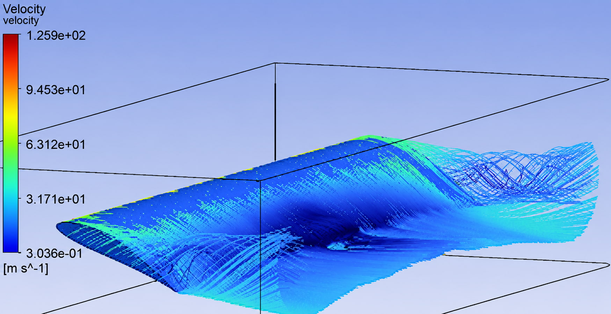
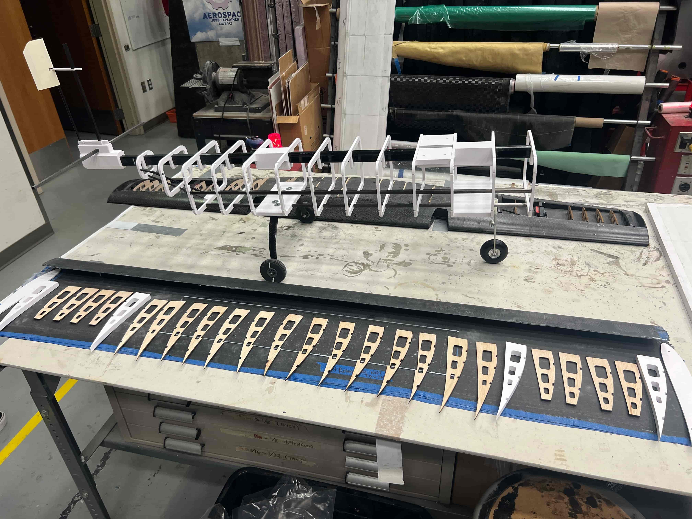
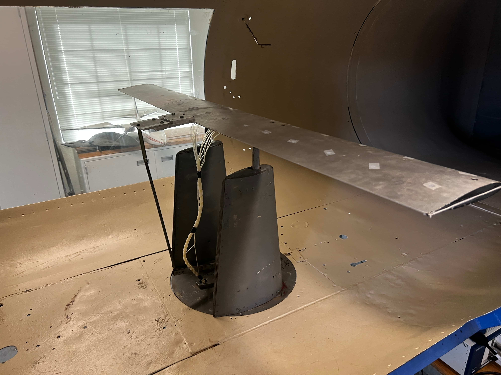

Led the aerodynamics workflow for OU AIAA Design/Build/Fly, from mission sizing and airfoil selection to CFD validation, wind-tunnel testing, and flight-test debriefs. My work focused on building a high-lift, low-drag aircraft configuration that could meet payload, stability, and mission-scoring requirements within annual DBF constraints.
Overview
AIAA Design/Build/Fly is a collegiate aircraft design competition where teams design, manufacture, and fly a mission-specific fixed-wing aircraft. As Aerodynamics Lead, I owned the airfoil and planform development process and worked with structures, propulsion, and payload leads to keep the configuration stable, efficient, and manufacturable.
Problem
The DBF aircraft had to balance payload capacity, low-speed handling, and cruise efficiency within a strict mission-scoring structure. For the 2025–2026 season, the aircraft also needed to support banner-towing mission requirements while maintaining stable flight, practical manufacturing, and enough stall margin for repeatable competition runs. The main challenge was narrowing the design space quickly before committing to high-fidelity CFD, structural layout, and manufacturing.
Approach
- Defined the aerodynamic design targets from mission requirements, including lift, drag, stability, and stall-margin needs.
- Used low-fidelity tools to screen airfoils and planforms before moving selected configurations into CFD.
- Compared simulation outputs against wind-tunnel and flight-test observations to improve confidence in the final configuration.

Contribution
- Owned the airfoil down-select process and led aerodynamic trade studies for wing geometry and stability targets.
- Built the aerodynamic models used during design reviews and coordinated updates with structures, propulsion, and payload leads.
- Supported manufacturing decisions by reviewing geometry changes before carbon-fiber layup and aircraft integration.


Outcome
- Selected a final airfoil and wing planform that balanced payload capacity, stall margin, trim stability, and cruise efficiency for DBF mission requirements.
- Validated aerodynamic predictions using XFLR5, AVL, ANSYS Fluent, and wind-tunnel testing to compare lift, drag, and pitching-moment trends.
- Identified a Reynolds-number shift near stall during testing, which helped improve the team’s understanding of low-speed flight behavior.
- Improved design confidence before manufacturing by connecting low-fidelity airfoil sweeps with higher-fidelity CFD and physical test data.
- Created a repeatable aero design-review workflow that helped structures, propulsion, and payload teams make better downstream design decisions.
What I Learned
- Low-fidelity tools are most useful when they are used to compare trends, not predict final performance perfectly.
- Airfoil selection affects more than lift and drag; it also drives structure, manufacturability, stability, and payload integration.
- Wind-tunnel and flight-test data are critical because small Reynolds-number effects can change stall behavior and handling margins.